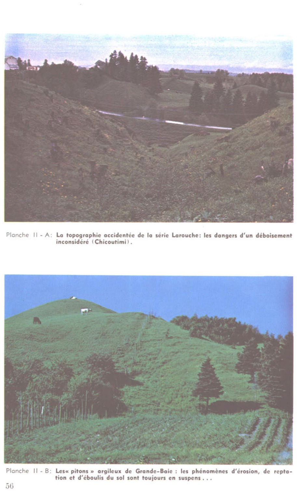
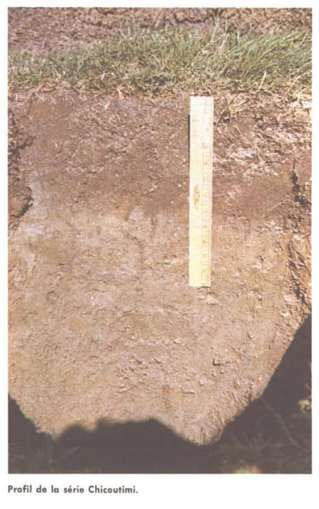

Identification & Caractéristiques Générales
La série Chicoutimi regroupe des sols minéraux développés sur des sédiments marins à texture fine, constitués principalement d'argile et d'argile limoneuse, souvent remaniés ou perturbés par des mouvements de terrain post-glaciaires. Ces dépôts quaternaires se situent sur des formes de terrain caractérisées par une topographie horizontale à subhorizontale, généralement localisées dans des bassins de faible étendue ou des zones de terrasses marines et littorales. La fraction minérale fine de la roche-mère est caractérisée par une composition minéralogique comprenant de la montmorillonite, de l'illite, de la vermiculite, du quartz, des feldspaths, des amphiboles et de la chlorite, avec une réaction chimique souvent carbonatée (positive à l'acide chlorhydrique dilué) à moins d'un mètre de profondeur.
Sur le plan morphologique, le profil présente un développement modéré caractérisé par une forte hydromorphie, menant à une différenciation marquée par des horizons de type éluvié et des zones rubanées ou marbrées. Le drainage naturel est déficient, variant d'imparfait à mauvais, en raison de la texture argileuse lourde qui confère au profil une perméabilité interne faible et une vitesse d'infiltration restreinte. La compacité des horizons sous-jacents limite la percolation verticale, provoquant l'apparition fréquente d'une nappe phréatique suspendue temporaire en période de fonte nivale ou de fortes précipitations. Le solum présente une réaction variant d'acide à neutre en surface, devenant généralement alcalin en profondeur selon la présence de carbonates d'origine marine.
Les aptitudes agronomiques de la série Chicoutimi sont conditionnées par la texture lourde et les contraintes hydriques, limitant l'utilisation intensive des terres sans aménagements correctifs. Les limitations majeures incluent l'excès d'eau printanier, la battance des horizons de surface et la lenteur du réchauffement du sol, qui restreignent le choix des cultures et écourtent la saison végétative utile. La mise en valeur agricole requiert obligatoirement l'installation d'un réseau de drainage souterrain (tuyauterie) serré pour abaisser la nappe phréatique et améliorer la portabilité du sol. Le travail cultural exige un ajustement rigoureux des calendriers d'intervention afin d'éviter le tassement préjudiciable et la détérioration de la structure granulaire ou polyédrique des horizons de surface.
Caractères Distinctifs & Morphologie Génétique (Comté de Chicoutimi — Page 38)
- Topographie : horizontale à subhorizontaleDrainage :imparfait à mauvaisGrand-groupe génétique :gleysolDegré d'érosion :modéré (W1) à nulClasse d'utilisation :2 - 1Association géographique :séries Hébertville, Taillon, Alma, Kénogami, Girard, Martel, Pelletier, Proulx, etc.Végétation naturelle :bouleaux, peupliers, aulnes, coudriers, etc.
Classification Taxonomique & Environnement Pédologique
| Ordre Pédologique | Gleysolique |
|---|---|
| Grand Groupe (SCSS) | Gleysol orthique |
| Sous-Groupe Taxonomique | Gleysol orthique |
| Famille Pédologique | Argileuse-fine, mixte argileux, alcalin (calcaire) |
| Mode de Dépôt Parental | Marin |
| Classe de Drainage Naturel | Imparfaitement drainé |
| Régime Thermique & Humidité | Frais / Perhumide |
Description Morphologique du Profil Type
Séquences génétiques des horizons pédologiques caractérisant le profil type représentatif de la série Chicoutimi :
Profil forestier / boisé — Comté de Charlevoix
✓ Source : Comté de Charlevoix — Page 39Couleur Munsell : 10YR 6/3
Structure & Consistance : Polyédrique à granulaire
Description morphologique : Sable brun pâle à brun-jaune clair (10 YR 6/3-6/4 h); particulaire; meuble; lits de magnétite; limite distincte, ondulée; extrêmement acide.
Couleur Munsell : 10YR 7/3
Structure & Consistance : Polyédrique à granulaire
Description morphologique : Sable brun très pâle (10 YR 7/3 h); particulaire; meuble; lits de magnétite; limite graduelle, régulière; très fortement acide.
Couleur Munsell : 10YR 7/2
Structure & Consistance : Polyédrique à granulaire
Description morphologique : Sable gris clair à brun très pâle (10 YR 7/2-7/3 h); particulaire; meuble; lits de magnétite; fortement acide.
Profil forestier / boisé — Comté de Charlevoix
✓ Source : Comté de Charlevoix — Page 52Couleur Munsell : Non précisée
Structure & Consistance : Polyédrique à granulaire
Description morphologique : Litière (résineux et carex); extrêmement acide.
Couleur Munsell : 5Y 2/1
Structure & Consistance : Polyédrique à granulaire
Description morphologique : Matière organique bien décomposée noire (5 Y 2/1 h); extrêmement acide.
Couleur Munsell : 5Y 6/1
Structure & Consistance : Polyédrique à granulaire
Description morphologique : Loam gris à gris clair (5 Y 6/1-7/1 h); marbrures peu nombreuses, moyennes, distinctes; amorphe; très ferme; limite distincte, régulière; faiblement acide.
Couleur Munsell : 5Y 6/2
Structure & Consistance : Polyédrique à granulaire
Description morphologique : Loam argileux gris olive clair (5 Y 6/2 h); marbrures nombreuses, petites, marquées; amorphe; ferme; limite distincte, régulière; neutre.
Couleur Munsell : 5Y 5/2
Structure & Consistance : Polyédrique à granulaire
Description morphologique : Loam argileux gris olive (5 Y 5/2 h); granulaire, faible, grossière; friable; limite graduelle, régulière; neutre.
Couleur Munsell : 5Y 5/2
Structure & Consistance : Polyédrique à granulaire
Description morphologique : Loam limono-argileux gris olive (5 Y 5/2 h); polyédrique, modérée, fine; friable; faiblement alcalin.
Profil représentatif — Comté de Chicoutimi — Phase humifère du
✓ Source : Comté de Chicoutimi — Page 38Couleur Munsell : 5Y 7/1
Structure & Consistance : Polyédrique
Description morphologique : Argile limoneuse à limon argileux gris clair (5Y 7/1) à l'état sec; structure polyédrique; pH: 6.1.
Couleur Munsell : 2.5Y 5/3
Structure & Consistance : Polyédrique à granulaire
Description morphologique : Argile limoneuse à limon argileux olive (2.5Y 5/3); assez compacte avec marques de gleyification; pH: 6.2.
Couleur Munsell : 5Y 5/2
Structure & Consistance : Polyédrique
Description morphologique : Argile limoneuse gris olive (5Y 5/2); plus friable que Bg 1 et à structure polyédrique; pH: 7.0.
Couleur Munsell : 5Y 6/2
Structure & Consistance : Finement polyédrique à tendance cubique
Description morphologique : Argile gris olive pâle (5Y 6/2); friable à structure finement polyédrique à tendance cubique; effervescence; pH: 8.2.
Profil représentatif — Pédologie de la région du Lac-Sa
✓ Source : Pédologie de la région du Lac-Sa — Page 49Couleur Munsell : 2.5Y 4/2
Structure & Consistance : Grumeleuse
Description morphologique : Argile limoneuse à limon argileux brun-gris foncé (2.5Y 4/2); structure grumeleuse; pH: 5.8.
Couleur Munsell : 2.5Y 5/3
Structure & Consistance : À tendance cubique
Description morphologique : Argile limoneuse à limon argileux olive (2.5Y 5/3); compact, horizon massif, structure à tendance cubique; se débite en gros morceaux; pH: 6.2.
Couleur Munsell : 5Y 5/2
Structure & Consistance : Légèrement grumeleuse
Description morphologique : Argile gris-olive (5Y 5/2); horizon moins compact que Bg 1 ; structure légèrement grumeleuse; pH: 6.6.
Couleur Munsell : 5Y 6/2
Structure & Consistance : Finement mieteuse
Description morphologique : Argile gris-olive pâle (5Y 6/2); structure finement mieteuse, se débitant en grains plus ou moins cubiques; effervescence; pH: 7.2.
Profils Photographiques & Planches de Terrain
Documents iconographiques, figures pédologiques et coupes de terrain documentées dans les mémoires d'inventaire pour de la série Chicoutimi :


Propriétés Physico-Chimiques & Analyses de Laboratoire
| Horizon | Prof. (pces/cm) | Sable % | Limon % | Argile % | pH | C % | N % | Ca éch. | Mg éch. | K éch. | H+ éch. | Bases tot. | C.E.C. (meq/100g) | Saturation % | |||||||||||
|---|---|---|---|---|---|---|---|---|---|---|---|---|---|---|---|---|---|---|---|---|---|---|---|---|---|
| L | 15-8 | matière organique | 3,7 | 3,2 | 50,70 | 1,94 | 0,09 | 0,05 | 0,02 | 0,07 | 16,60 | 4,13 | 2,22 | 0,39 | 96,0 | 119,34 | 20,0 | 61,6 | 2466 | ||||||
| H | 8-0 | matière organique | 3,8 | 3,1 | 44,28 | 1,75 | 0,41 | 0,34 | 0,40 | 0,30 | 13,86 | 3,89 | 1,08 | 0,54 | 104,0 | 123,37 | 16,0 | 8,4 | 1109 | ||||||
| Aeg | 0-5 | 0,0 | 20,0 | 8,0 | 30,0 | 40,0 | 34,0 | 26,0 | 6,5 | 5,4 | 0,36 | 0,05 | 0,83 | 0,10 | 0,47 | 0,35 | 8,55 | 3,32 | 0,45 | 0,19 | 2,0 | 14,51 | 86,0 | 397 | 2219 |
| Bg(Btjg) | 5-20 | 0,0 | 0,0 | 1,0 | 23,0 | 24,0 | 46,0 | 30,0 | 7,0 | 5,8 | 0,25 | 0,05 | 1,23 | 0,10 | 0,30 | 0,17 | 10,15 | 6,64 | 0,55 | 0,23 | 1,5 | 19,07 | 92,0 | 470 | 2466 |
| Cg1 | 20-51 | 1,0 | 20,0 | 9,0 | 28,0 | 40,0 | 25,0 | 35,0 | 7,3 | 6,3 | 0,20 | 0,06 | 1,03 | 0,11 | 0,08 | 0,11 | 12,00 | 6,64 | 0,68 | 0,26 | 10,0 | 20,58 | 95,0 | 792 | 2342 |
| Cg2 | 51+ | 0,0 | 0,0 | 3,0 | 15,0 | 18,0 | 44,0 | 38,0 | 7,6 | 6,5 | 0,23 | 0,04 | 0,75 | 0,08 | 0,06 | 0,04 | 9,35 | 3,32 | 0,66 | 0,21 | 0,0 | 13,54 | 100,0 | 728 | 2652 |
Particularités Régionales, Phases & Variantes Pédologiques
Déclinaisons régionales, faciès texturaux, phases d'érosion ou de pierrosité et variantes cartographiées par étude pour de la série Chicoutimi :
| Étude Régionale | Symbole | Appellation / Phase / Variante | Différenciation avec la série type (Analyse pédologique) |
|---|---|---|---|
| Comté de Charlevoix | Ch |
Chicoutimi loam argileux | Modalité modale de référence (type de base de la série). |
| Comté de Chicoutimi | Ch |
Chicoutimi argile à argile limoneuse | Faciès argileux plus lourd et compact que le loam argileux de référence. |
Ch-O |
Chicoutimi phase organique | Phase organique caractérisée par un recouvrement holorganique épais en surface. | |
| Pédologie de la région du Lac-Saint-Jean | Ch |
Chicoutimi argile | Faciès argileux plus lourd et compact que le loam argileux de référence. |
Distribution Pédo-Paysagère & Représentativité Cartographique (Couverture PPS 2026)
- Alma loam (ALM) — co-occurrente dans 55 polygone(s)
- Taillon loam (TLL) — co-occurrente dans 45 polygone(s)
- Hébertville argile (HBV) — co-occurrente dans 31 polygone(s)
Aptitudes Agronomiques, Hydropédologie & Conservation des Sols
Indicateurs Hydropédologiques & Vulnérabilité à l'Érosion (BDHP 2026)
Interprétation BDHP : Potentiel de ruissellement modérément faible. Infiltration modérée avec textures moyennes à modérément grossières.
Classement selon l'Inventaire des Terres du Canada (ITC / CLI) : Classe 2c.
- Potentiel agricole : Terroir adapté aux cultures régionales selon la texture dominante et la régie de drainage.
- Contraintes majeures : Imparfaitement drainé. Risque d'engorgement temporaire ou d'excès d'eau printanier.
- Gestion & Aménagement : Drainage souterrain ou superficiel préconisé sur les terres planes. Chaulage et apport organique régulier selon les bilans agronomiques.
- Cultures adaptées : Grandes cultures (maïs, soya, céréales), prairies fourragères et cultures maraîchères selon le contexte géomorphologique.